Roteiro
Para acessar o cadastro de Roteiro é necessário ir no menu:
Produção -> Roteiro
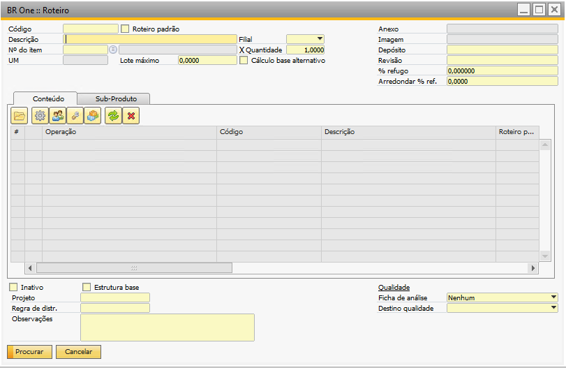{kind=link}
São cadastrados os roteiros para produção dos produtos.
A tela é aberta no modo de Procurar, para adicionar deve ativar o botão Adicionar ou Ctrl+A, a tela ficará no modo de adição:
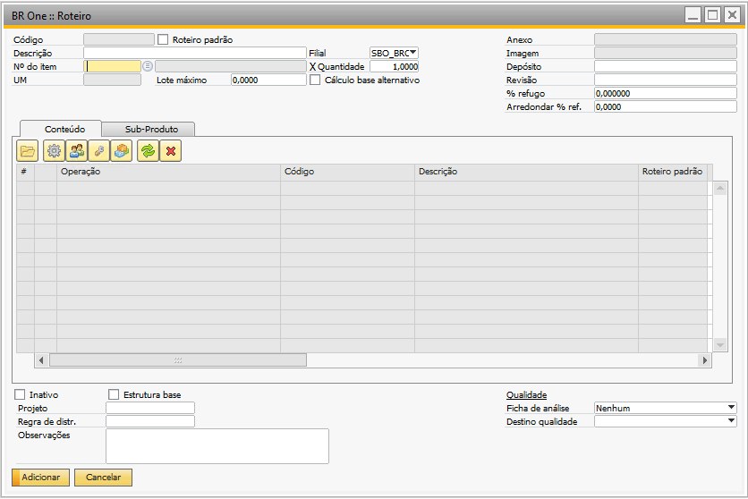{kind=link}
Para adicionar um novo roteiro, basta preencher os campos corretamente e pressionar o botão Adicionar.
Caso o usuário não informe um valor para o campo Descrição, a seguinte mensagem de erro será exibida em vermelho no rodapé:
{kind=link}
BR One :: Informe um valor para o campo “Descrição”.
Caso o usuário não informe um valor para o campo “Nº do item”, a seguinte mensagem de erro será exibida em vermelho no rodapé:
{kind=link}
BR One :: Informe um valor para o campo “N° do item”.
Observação: Para esse campo, abrirá uma listagem com itens que possuem o método de avaliação igual a “Preço médio móvel” e, se o item já estiver cadastrado a um roteiro e o usuário tentar alterar o método de avaliação, a seguinte mensagem será exibida:

BR One :: O método de avaliação de um produto acabado deve ser obrigatoriamente “Preço médio móvel”.
Caso o usuário não informe um valor para o campo “Quantidade” que seja maior que zero, a seguinte mensagem de erro será exibida em vermelho no rodapé:
{kind=link}
BR One :: A quantidade deve ser maior que zero.
Caso o usuário não informe um valor para o campo “Depósito”, a seguinte mensagem de erro será exibida em vermelho no rodapé:
{kind=link}
BR One :: Informe um valor para o campo “Depósito”.
Caso o usuário tente inserir um roteiro sem linhas, a seguinte mensagem será exibida em vermelho no rodapé:
{kind=link}
BR One :: Insira linhas para o roteiro.
Caso o usuário tente inserir um roteiro onde alguma das linhas não possui quantidade, a seguinte mensagem será exibida:
{kind=link}
BR One :: Quantidade deve ser maior que zero.
Caso o usuário tente alterar os campos “Depósito”, “Método de baixa” e “Perda (%)” na linha do roteiro que não for do tipo Componente, será exibida a seguinte mensagem:
{kind=link}
BR One :: Só é permitido alterar o valor desta célula para o tipo componente.
Para editar as linhas do roteiro, existem botões específicos para cada um dos elementos que podem ser adicionados no roteiro.

Operação
Para adicionar uma nova operação, use o botão destacado abaixo, ao pressiona-lo será aberto uma lista com as operações:


Caso o usuário tente adicionar uma operação que já tenha sido adicionada anteriormente, uma mensagem de confirmação será exibida. Se confirmar, o processo de inclusão de uma nova operação irá continuar, caso contrário, o processo de inclusão de uma nova operação será abortado.

BR One :: Operação já existente. Continuar?
O usuário deverá escolher um número para indicar a sequência da operação.
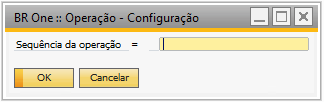{kind=link}
Caso informe um número menor ou igual zero, a seguinte mensagem será exibida:

BR One :: Insira um número igual ou maior que zero.
Caso o número já exista para outra operação, a seguinte mensagem será exibida:

BR One :: Número da sequência já existe.
Adição de recursos
Para adicionar um grupo de recurso do tipo máquina, ferramenta, mão de obra e um componente, basta selecionar a linha desejada e pressionar o botão destacado abaixo:


O processo de inclusão de um grupo de recurso/componente é igual para todos os tipos. É preciso selecionar a operação a qual vai pertencer a nova linha, em seguida apertar o botão do tipo de linha que deseja inserir. A seguinte tela irá aparecer:
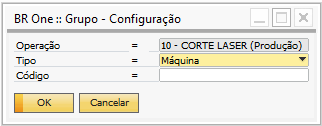{kind=link}
Nesta tela ainda é possível alterar o tipo da linha que será adicionada, basta selecionar algum dos valores da lista:
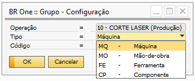{kind=link}
Caso o usuário não selecione a linha da operação antes de tentar adicionar um grupo de recurso/componente, a seguinte mensagem irá aparecer:

BR One :: Selecione a posição onde deseja inserir a nova linha.
Depois de escolher o tipo, o usuário deverá escolher o item que será adicionado. Para fazer isso, o campo código possui uma lista de seleção com os valores possíveis para o tipo selecionado.

Se o tipo escolhido for “Componente”, na lista serão exibidos os itens que são de estoque e para itens que não são de estoque, o método de avaliação deve ser diferente de preço médio móvel.

Caso o campo código não seja informado e o usuário tente prosseguir, a seguinte mensagem será exibida:

BR One :: Informe um valor para o campo “Código”.
Se a flag “Permitir duplicar componentes na mesma operação (OP/Roteiro)” da tela “Configurações de Produção” estiver desmarcada e o usuário tente adicionar nas linhas um grupo/componente que já tenha sido adicionado anteriormente na mesma operação, a seguinte mensagem será exibida:
{kind=link}
BR One :: Grupo já existente e não pode ser duplicado.
Caso o usuário tente adicionar nas linhas um componente que seja o mesmo item do cabeçalho (produto), a seguinte mensagem de erro será exibida:

BR One :: Não é permitido incluir nas linhas o mesmo item informado no cabeçalho.
A coluna “Roteiro padrão” estará preenchida com o roteiro padrão do item, caso ele tenha um roteiro padrão e tenha o “Método de suprimento” como “Produzir”.
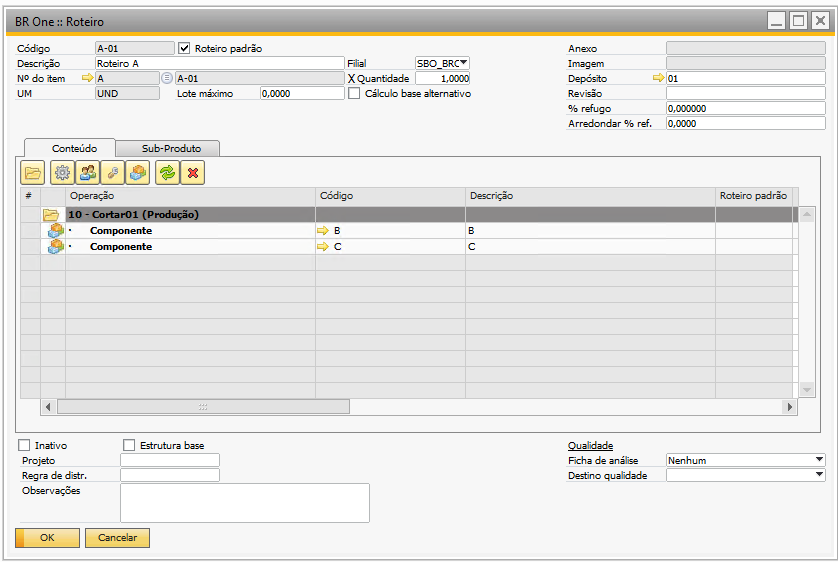{kind=link}

Caso o usuário tente inserir um roteiro onde alguma das linhas do tipo componente não possui depósito, a seguinte mensagem de erro será exibida:
{kind=link}
BR One :: Selecione um depósito.
Caso o usuário tente inserir um roteiro onde alguma das linhas do tipo componente não possui método de baixa, a seguinte mensagem será exibida:
{kind=link}
BR One :: Selecione um método de baixa.
Se o componente for um item controlado por série, o método de baixa tem que ser obrigatoriamente o “Manual”. Caso o usuário selecione o método “Baixa por explosão”, a seguinte mensagem será exibida:
{kind=link}
BR One :: Baixa manual deve ser o método de saída para itens que são administrados por série.*
Alterar grupo
Para alterar um grupo de recurso ou um componente, basta selecionar a linha desejada e pressionar o botão destacado abaixo:

Esse botão não altera operações, portanto se o usuário tentar alterar uma operação, a seguinte mensagem será exibida:
{kind=link}
BR One :: Não é permitido alterar operações.*
Eliminar linha
Para remover uma linha do roteiro, basta selecionar a linha desejada pressionar o botão destacado abaixo:

Quando uma operação é removida, todos os grupos de recursos e componentes dentro dela também serão removidos, portanto uma mensagem de confirmação é exibida para o usuário.

BR One :: Todas as linhas pertencentes a esta operação serão removidas também. Continuar?*
Caso o usuário confirme, a operação e tudo o que pertence a ela serão removidos. Caso contrário nenhuma ação será executada.
É possível também remover individualmente as linhas de recursos e componentes, para este tipo de linha, não será exibido nenhuma mensagem de confirmação.
Roteiro
É possível adicionar uma observação para uma linha. Para isso, basta dar um duplo clique na coluna “Observação” na linha desejada. A seguinte tela irá abrir:

As linhas que contém observação ficarão marcadas com uma imagem.

No campo “Qtde. fixa” devem ser informado as quantidades fixas para o componente. Independentemente da quantidade total do componente, essa quantidade fixa sempre será somada ao total.
Por exemplo, se a quantidade do item do cabeçalho for 1, a quantidade do componente X na linha do roteiro for 10 e a quantidade fixa for 5, o total do componente será (1 x 10) + 5 = 15, totalizando a quantidade, conforme exemplo destacado na OP abaixo:

É possível remover um roteiro, para isto, basta pressionar o botão direito do mouse e selecionar a opção “Remover”.
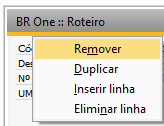{kind=link}
Será exibida uma mensagem de confirmação. Caso o usuário confirme, o roteiro será removido. Caso contrário, nenhuma ação será executada.

BR One :: Registro será removido. Continuar?
Caso o roteiro esteja em uso, uma mensagem de erro será exibida para o usuário.
{kind=link}
BR One :: Registro em uso não pode ser excluído.
Também é possível marcar um roteiro como inativo, para isto, basta marcar a flag “Inativo” na tela do “Roteiro”. Dessa forma o roteiro não ficará disponível para seleção no momento da adição da OP.

No cabeçalho há o campo “UM” que caso o item tenha um “Grupo de UM” definido, ele poderá ser visualizado nesse campo.

No grid, para os recursos do tipo “Máquina”, “Mão-de-obra” e “Ferramenta”, a coluna “UM” será preenchida com “H (Horas)”, “M (Minutos)”, ou “S (Segundos)”, dependendo do que está parametrizado no campo “Unidade medida de tempo” da tela “Configurações de produção”.


O campo “Lote máximo” é utilizado no processo do MRP para solicitaçãoes de produção do item, onde indica a quantidade máxima a ser produzida por OP, detalhes no tópico do MRP.
A coluna “Desc. Leadtime” foi inserida no cadastro do roteiro. Essa coluna tem a finalidade de determinar quais operações serão consideradas nos cálculos de datas no “Assistente de MRP”.
Ou seja, se uma operação tiver o seu “Cálculo de LeadTime Desconsiderado”, ela assumirá as datas da operação anterior, ou das seguintes, se as primeiras operações forem desconsideradas nos cálculos, portanto, será uma operação que ocorre paralelamente a outra operação.
Essa informação poderá ser configurada no cadastro da “Operação” e poderá ser alterada tanto no “Roteiro” quanto na “Ordem de Produção”.

É importante que pelo menos uma operação, independente da sua ordem, tenha o cálculo de leadtime considerado. Se todas as linhas forem marcadas, a seguinte mensagem será exibida:
{kind=link}
BR One :: Pelo menos 1 operação deve ter seu cálculo de LeadTime considerado.
No rodapé temos a opção “Projeto” e “Regra de Destribuição”
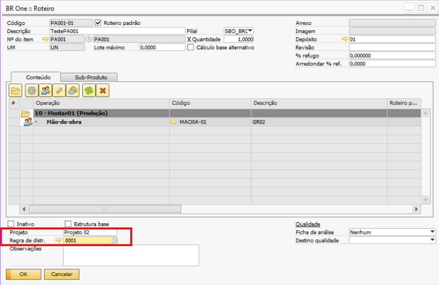Levando Valores para a Ordem de Produção:
Os valores adicionados nestes campos são transferidos para a tela “BR One :: Ordem de Produção”.
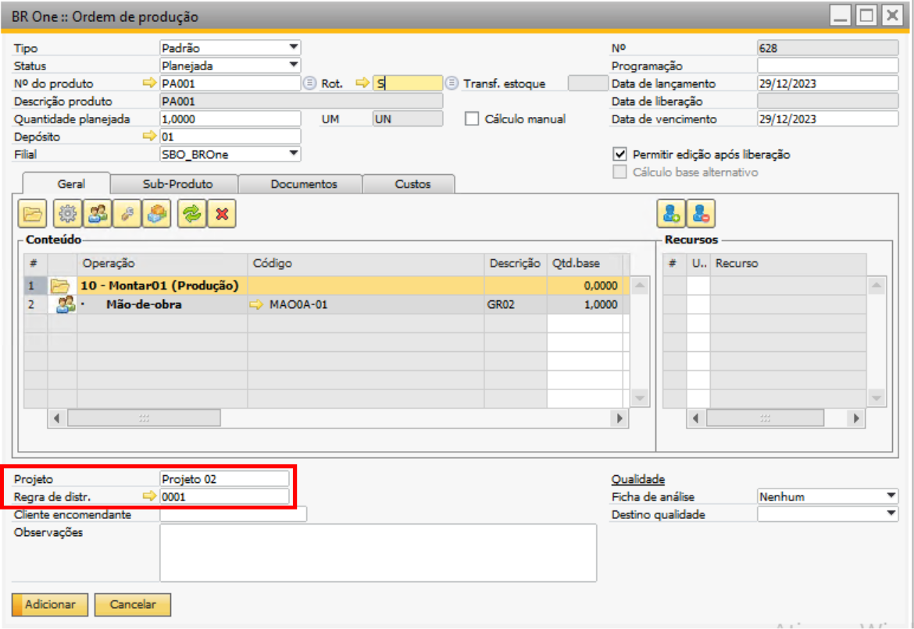Em caso de seleção incorreta no roteiro, é possível realizar ajustes na tela de “BR One :: Ordem de Produção”.
Projetos
O campo “Projetos” em uma Ordem de Produção está diretamente relacionado à funcionalidade de gestão de projetos. Essa associação permite o rastreamento de custos, recursos e atividades específicas vinculadas a um projeto. Isso facilita a análise de desempenho e a alocação eficiente de recursos.
Lista de Projetos:
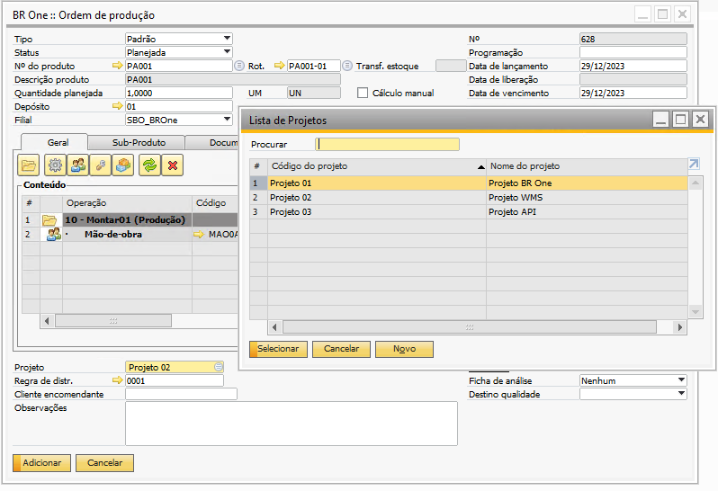Regra de Distribuição
O campo “Regra de Distribuição” refere-se à forma como os custos associados a uma ordem de produção serão distribuídos entre diferentes contas contábeis. Essa configuração é crucial para garantir uma contabilidade precisa e refletir adequadamente os custos de produção. Uma distribuição adequada contribui para a precisão dos relatórios financeiros e proporciona clareza nos aspectos contábeis relacionados à produção.
Lista de Regras de Distribuição:
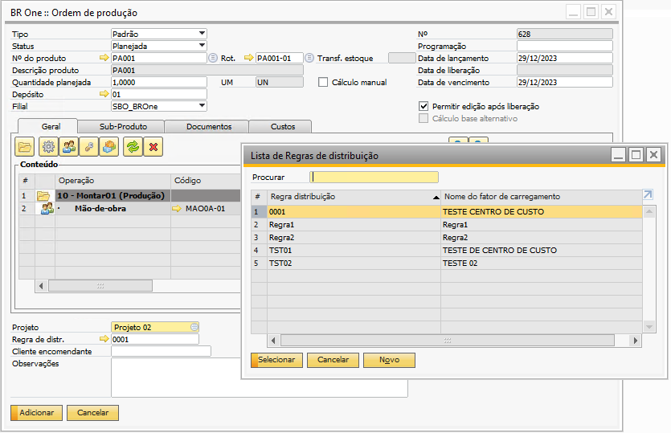